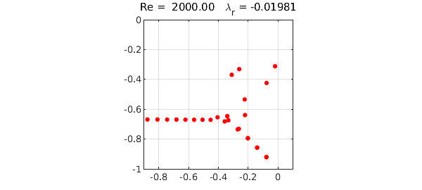
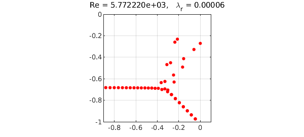

The Orr-Sommerfeld problem is a classic problem from the field of hydrodynamic stability. In the simplest case it models the flow of a Newtonian fluid between two infinite plates, governed by the Navier-Stokes equations. The Reynolds number $Re$ is a nondimensional parameter corresponding roughly to velocity divided by viscosity. For any value of $Re$ there is a smooth ("laminar") solution to the Navier-Stokes equations, but the stability, and hence the observability, of this solution is a delicate and much-studied question. In practice one observes instability and transition to turbulence when $Re$ is in the thousands or higher.
The Orr-Sommerfeld operator is the linear operator $L$ that maps infinitesimal perturbations of the laminar flow to their infinitesimal growth rates. Classically speaking we expect the flow to be stable if all the eigenvalues of $L$ lie in the left half-plane, and unstable if there are any eigenvalues in the right half-plane.
The following Chebfun code computes the rightmost $50$ eigenvalues of $L$ for $Re=2000$. This mathematical formulation, due to Reddy and Henningson and described in Appendix A of [1], involves a fourth order complex generalized eigenvalue problem.
Re = 2000; % Reynolds number
alph = 1; % longitudinal Fourier parameter
A = chebop(-1,1);
A.op = @(x,u) (diff(u,4)-2*alph^2*diff(u,2)+alph^4*u)/Re - ...
2i*alph*u - 1i*alph*(1-x.^2).*(diff(u,2)-alph^2*u);
B = chebop(-1,1);
B.op = @(x,u) diff(u,2) - alph^2*u;
A.lbc = [0; 0];
A.rbc = [0; 0];
e = eigs(A,B,50,'LR');
MS = 'markersize';
maxe = max(real(e));
plot(e,'.r',MS,14), grid on, axis([-.9 .1 -1 0]), axis square
title(sprintf('Re = %8.2f \\lambda_r = %7.5f',Re,maxe))

(The eigenvalues on the lower-right branch are near-degenerate pairs.) Here is the same computation for $Re = 5772.22$, the critical value at which an eigenvalue first crosses into the right half-plane:
Re = 5772.22; alph = 1.02;
A.op = @(x,u) (diff(u,4)-2*alph^2*diff(u,2)+alph^4*u)/Re - ...
2i*alph*u - 1i*alph*(1-x.^2).*(diff(u,2)-alph^2*u);
e = eigs(A,B,50,'LR');
maxe = max(real(e));
plot(e,'.r',MS,16), grid on, axis([-.9 .1 -1 0]), axis square
title(['Re = ' sprintf('%5d',Re) ...
', \lambda_r = ' sprintf('%7.5f',maxe)])

Although the Orr-Sommerfeld equation is very famous, this eigenvalue analysis actually has little to do with what makes fluid flows unstable in practice, and it is difficult to see the number $5772.22$ in the laboratory [2].
References
-
P. J. Schmid and D. S. Henningson, Stability and Transition in Shear Flows, Springer, 2001.
-
L. N. Trefethen and M. Embree, Spectra and Pseudospectra: The Behavior of Nonnormal Matrices and Operators, Princeton U. Press, 2005.